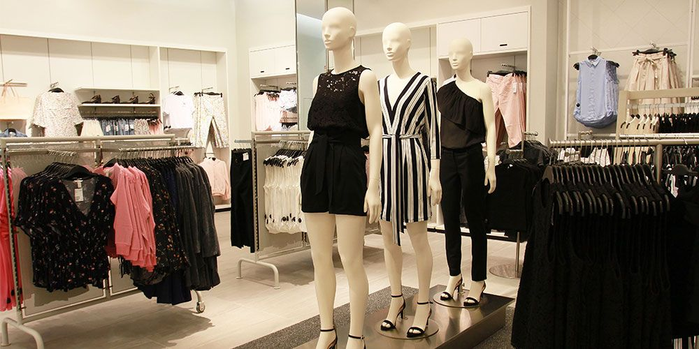
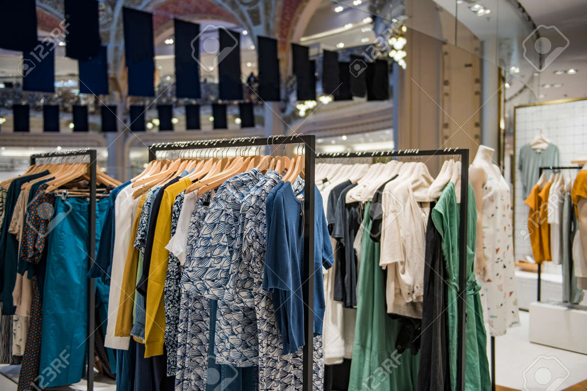

Inicio
Mas información
Tienda
Preguntas frecuentes
Formulario

Iniciar sesion
Inicia Sesion
y obten promociones exclusivas
POBLEMAS OCASIONADOS POR LA GRAN DEMANDA DE LA INDUSTRIA TEXTIL
Según la ONU, este sector produce el 20% de las aguas residuales mundiales y el 10% de las emisiones globales de carbono. Para hacernos una idea, fabricar unos pantalones vaqueros gasta un promedio de más de 7500 litros de agua. En 2016 en Estados Unidos, se produjeron un total de 16.890.000 toneladas de ropa, de las cuales 11.150.000 acabaron en un vertedero, 3.170.000 se incineraron con valorización energética y 2.570.000 se reciclaron. Hablando en porcentajes, significa que el 67% de la ropa producida en EEUU termina acumulándose en un vertedero y un 18% es incinerado, lo que nos sitúa en una tasa restante de reciclado de apenas un 15%. Además, los tintes usados para dar color a las distintas prendas de ropa muchas veces terminan en los ríos adyacentes a las fábricas, lo cual genera importantes impactos en la flora y fauna aguas abajo. Un ejemplo conocido es el de Bangladesh, cuyo río se ha fotografiado de distintos colores debido al vertido de aguas mezcladas con los tintes.
De acuerdo con el mismo reporte, el análisis de las parcelas de deforestación indican que la Península de Yucatán y los estados de Chiapas, Michoacán y Jalisco tienen las zonas críticas o hotspots más importantes en materia de deforestación. Además, otras regiones como la zona limítrofe sur entre Oaxaca y Veracruz, Guerrero y el norte de Veracruz y San Luis Potosí, también presentaron una dinámica importante de deforestación bruta entre 2001 y 2018. Destaca que la Península de Yucatán enfrenta hoy la amenaza enorme de la industria porcícola que actúa ilegalmente bajo el cobijo del gobierno local. De acuerdo con datos recopilados por Greenpeace para el informe “La carne que consume al planeta”, de las 257 granjas porcícolas con registro en alguna base de datos oficial en la Península de Yucatán, 122 (47%) están establecidas en regiones consideradas sitios de atención prioritaria para la conservación de la biodiversidad.
Otro factor a tener en cuenta son las condiciones laborales de los trabajadores. Al tratarse de una producción en masa, se recurre a una disminución de costes contratando mano de obra barata, la cual muchas veces se encuentra bajo condiciones de explotación. Todo ello da lugar a sueldos ridículos, jornadas laborales excesivas, condiciones de trabajo pésimas e incluso explotación infantil.
Las fibras textiles usadas en la moda son principalmente el algodón, el poliéster y el nylon. Estas fibras puede ser naturales (algodón) o sintéticas (poliéster y nylon), pero su producción en masa para la fabricación de prendas genera diversos impactos ambientales. El algodón, es el tercer tipo de cultivo que más agua requiere. Para hacernos una idea, producir un kilogramo de algodón requiere entre 5000 y 10000 litros de agua, en función de la técnica empleada. Uno de los mayores desastres derivados de este cultivo, fue la desecación del mar de Aral, situado entre Kazajistán y Uzbekistán. Dicho desastre, fue producido por la desviación de los cauces de los dos ríos principales que desembocaban a este “mar interno” para abastecer los grandes cultivos de regadío de la zona, principalmente algodón.

Por otro lado, las fibras sintéticas (poliéster y nylon) son producidas mediante compuestos químicos, principalmente derivados del petróleo. Sus impactos no son precisamente pocos, puesto que al tratarse de derivados del petróleo en su producción se emiten una gran cantidad de gases de efecto invernadero. Además, son compuestos no biodegradables, y el lavado de estas prendas hace que desprendan sus fibras generando microplásticos que terminan llegando al mar.